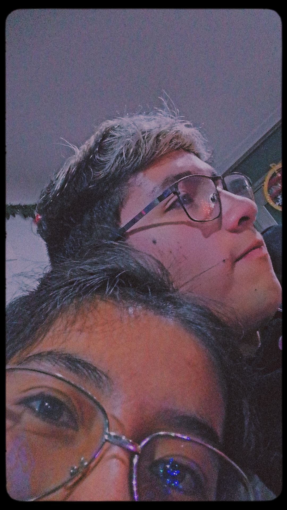
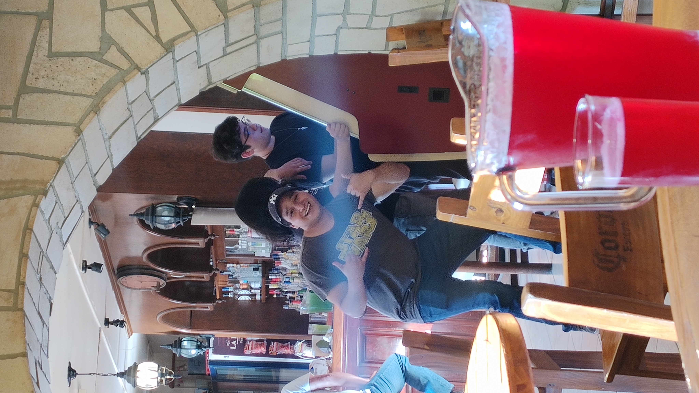
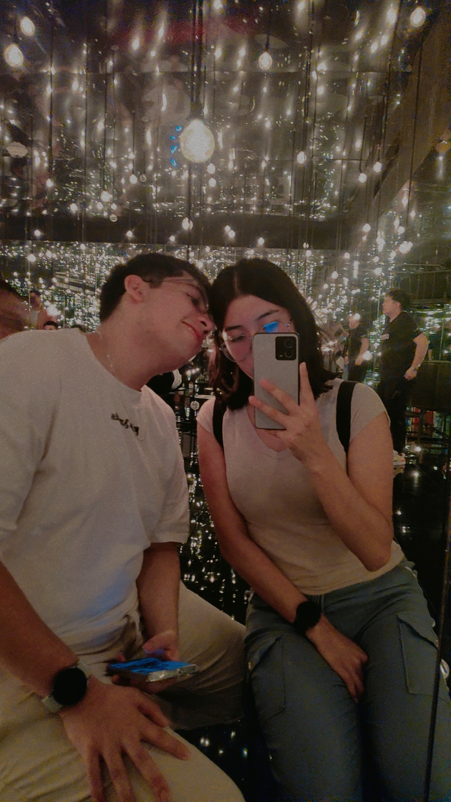
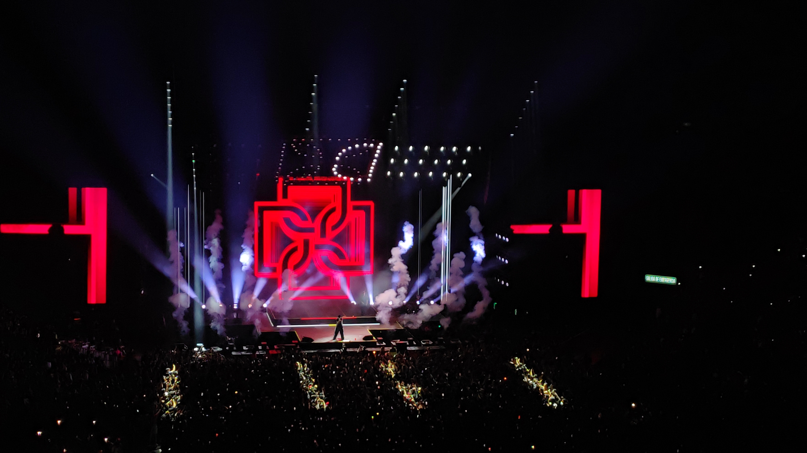
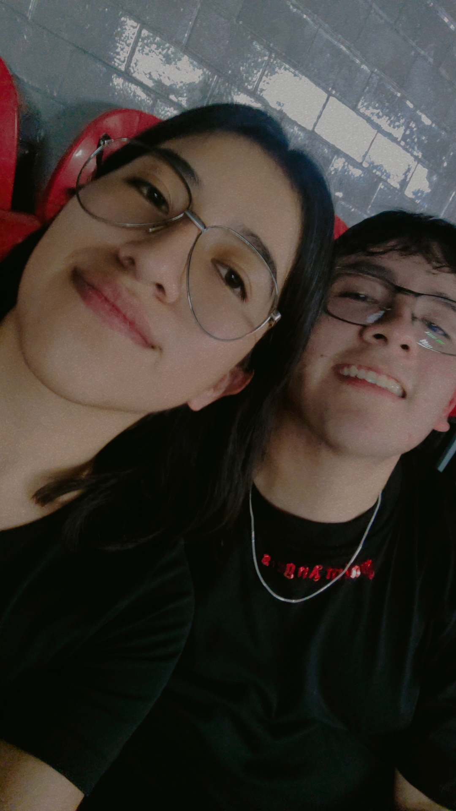

1) Tu forma de ser
Que aunque estes enojado conmigo, simpre estas a mi lado. Y que aunque te saque las canas verdes, estare contigo hasta que me dejes.
Navidad
Esta página es un abrazo. Una noche bonita, música, y un montón de cosas que me recuerdan por qué te elijo.
“Navidad? Aunque no estemos uno al lado del otro, pero siempre juntos”.

Portada de Navidad
Coloca una imagen en assets/img/navidad/portada.jpg
“La magia no es la fecha… eres tú.”
Activa la música y déjate llevar.
Un pequeño recuerdo de todos los momentos que pasamos.
Ese día entendí que contigo todo se siente hogar.
Sin rumbo, nunca solos; siempre acompañados.
Siempre nuevos experimentos, antojos y recetas nuevas.

Desapariciones como siempre, solo tu, yo y nuestra hambre ganando.

Aunque fue triste la partida, siempre estuvimos juntos a pesar de la distancia.

Tenias nuevas metas y propositos, que me incluyeras aunque sabias que no haria nada (tiamo).

El inicio de grandes momentos y trajedias.
Bonitos y gorditos
Siempre conociendo a nuevos orizontes.
Cada vez quitammos más metas de la lista de pendientes.
Que aunque estes enojado conmigo, simpre estas a mi lado. Y que aunque te saque las canas verdes, estare contigo hasta que me dejes.
Un ejemplo claro, fue mi cumpleaños, que apesar de todo el coraje que tenias, siempre estuviste cuidandome. Aunque hayan morido tus lentes.
Que siempre cambia de acuerdo a lo que vayas hacer. Ya sea para maldades, romantico o simplemente por ser gracioso
Que apesar de que sea demasiado dificil algo, lo sacas adelante con o sin ayuda.
“Feliz Navidad, amor. Gracias por existir en mi vida. Ojalá todas las Navidades me encuentren contigo. Pero deja de bromear con los tiktok que te mando, osea si, pero no.”